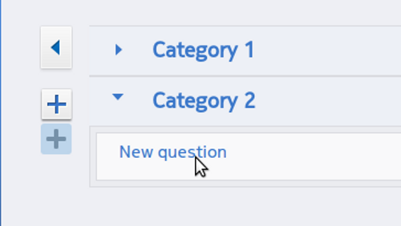

A new or existing survey has a name which can be clicked to edit and any number of categories and questions. Actually adding categories and questions is done by dragging from the Drag to add new category and Drag to add new question plus + buttons.
A new category being dragged into a survey
drop either above or below existing categories and the new category will appear. Click the name to edit
Click category name to edit
then drag the new question plus + button to add a question
A new question being dragged into a survey
then click the new question text to edit the question you would like to ask.

Clicking the question text will open out into the questions toolbar